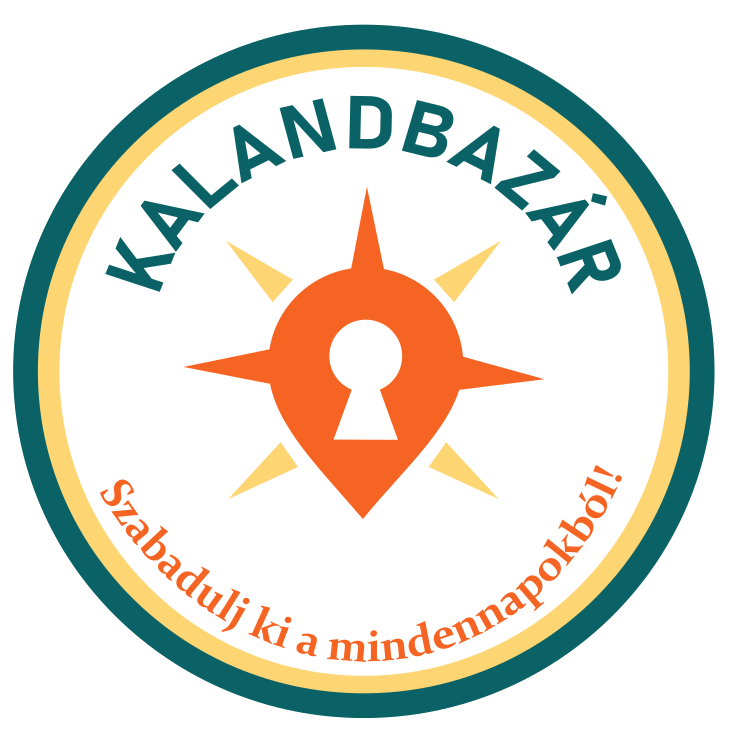

Kalandbazár
Szabadulj ki a mindennapokból – tematikus szabadulószobák 2–6 fős csapatoknak
Időpontot foglalok
Miért válaszd a Kalandbazárt?
- Történetközpontú játékmenet: minden szoba saját sztorival és fordulatokkal vár.
- Látványos díszletek: egyedi mechanikák, rejtett ajtók és okos zárak.
- Nehézségi szintek: kezdőknek és profiknak egyaránt.
- Csapatprogramok: céges csapatépítés és iskolai csoportok számára is.
- Segítő játékmester: kamerás felügyelet mellett opcionális tippekkel.
Szobáinkról röviden
Szoba neve Téma Játékidő Nehézség Ajánlott létszám
Időutazás Vissza a múltba, hogy kijavítsd a történelmet 60 perc *** 2–5 fő
A Fáraó Átka Piramis mélyén rejlő titkok 60 perc **** 3–6 fő
A Fekete Sirály kincse Kincskeresés egy süllyedő kalózhajón 60 perc ***** 4–6 fő
Foglalás menete
Válaszd ki a kívánt szobát. (https://www.kalandbazar.hu/szoba/)
Add meg a létszámot és az időpontot.
Fizess online biztonságosan, vagy válaszd a helyszíni fizetést.
Érkezz 10 perccel korábban!
Kapcsolat
1053 Budapest, Rejtély utca 7.
+36 20 123 4567